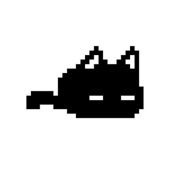

Hulu / Disney+
July 2025 — present
Product Manager II
Recommendations & Personalization

My practice is driven by liminal spaces and nature.
Product by day, boards and vis dev after hours; guided by the small, steady: whether in a lighting scene, or a product feature.
Recommendations & Personalization
Visual Development
Platform Tooling
University of Texas at Austin
Bachelor of Science, Computer Science
More on the way.
Workshopping all the stories and thoughts.